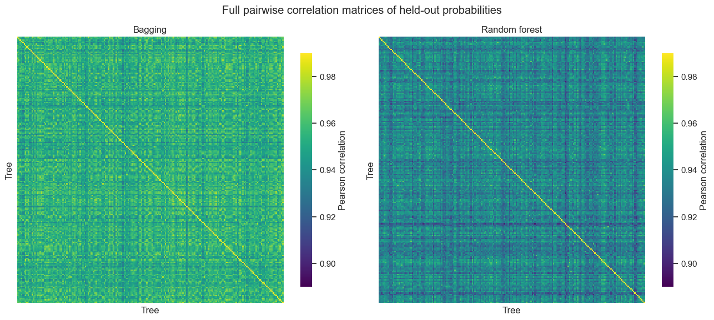
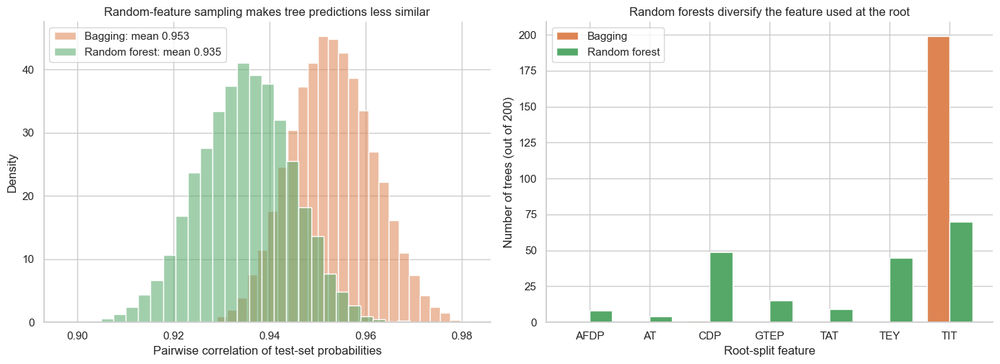
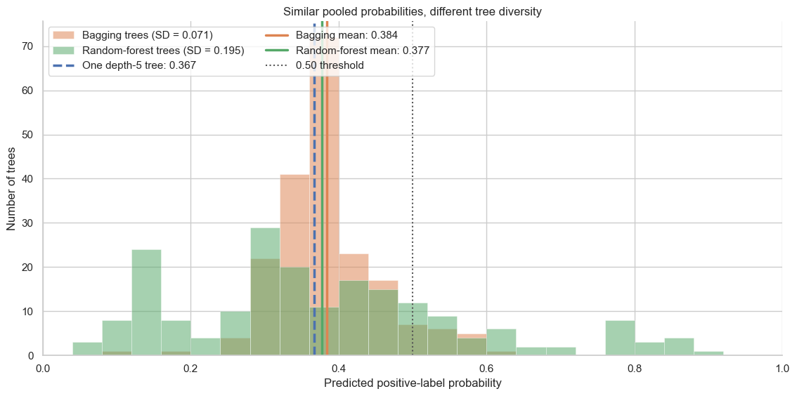

from pathlib import Path
from typing import Any
from urllib.request import urlretrieve
import matplotlib.pyplot as plt
import numpy as np
import pandas as pd
import seaborn as sns
from sklearn.ensemble import BaggingClassifier, RandomForestClassifier
from sklearn.metrics import roc_auc_score
from sklearn.model_selection import train_test_split
from sklearn.tree import DecisionTreeClassifier
sns.set_theme(style="whitegrid", context="notebook", palette="deep")
deep_palette = sns.color_palette("deep")
single_tree_color, bagging_color, forest_color = deep_palette[:3]Random forests: diverse trees, one prediction

A single decision tree can learn useful operating rules, but a small change in its training observations can lead to a different tree. In this notebook, we use many such trees to predict whether a gas-turbine operating observation receives the positive high_co label.
We will first use bagging to average trees fitted to bootstrap samples. A random forest adds another source of diversity: at each split, each tree may consider only a random subset of the available features.
What you will do
- Compare one depth-5 tree with bagging and a random forest on the same held-out data.
- Inspect how random feature subsets make the trees less alike.
- Follow the individual tree probabilities for one held-out observation and see how the ensemble pools them.
1. Set up the classification task
We continue using the nine measured operating quantities and the same 70/30 stratified train/test split used in the earlier tree lessons. high_co is the binary target; CO itself is excluded because that measurement defines the label.
DATA_URL = (
"https://raw.githubusercontent.com/changyaochen/MECE4520/master/"
"site/data/gas-turbine-course.csv"
)
data_candidates = [
Path("../data/gas-turbine-course.csv"),
Path("site/data/gas-turbine-course.csv"),
Path("gas-turbine-course.csv"),
]
data_path = next((path for path in data_candidates if path.exists()), data_candidates[-1])
# In Google Colab, retrieve the course dataset only when it is not already present.
if not data_path.exists():
urlretrieve(url=DATA_URL, filename=data_path)
FEATURES = ["AT", "AP", "AH", "AFDP", "GTEP", "TIT", "TAT", "TEY", "CDP"]
TARGET = "high_co"
RANDOM_STATE = 4520
MAX_DEPTH = 5
FEATURE_CANDIDATES_PER_SPLIT = 3
data = pd.read_csv(filepath_or_buffer=data_path)
model_data = data[FEATURES + [TARGET]].dropna().copy()
X_train, X_test, y_train, y_test = train_test_split(
model_data[FEATURES],
model_data[TARGET],
test_size=0.30,
random_state=RANDOM_STATE,
stratify=model_data[TARGET],
)
split_summary = pd.DataFrame(
{
"observations": [len(X_train), len(X_test)],
"positive-label fraction": [y_train.mean(), y_test.mean()],
},
index=["Training set", "Test set"],
)
split_summary.style.format({"positive-label fraction": "{:.1%}"})| observations | positive-label fraction | |
|---|---|---|
| Training set | 24778 | 38.8% |
| Test set | 10620 | 38.8% |
2. Begin with one depth-5 tree
We limit every tree in this notebook to depth 5. An individual depth-5 tree remains flexible, but can still be sensitive to the particular observations it saw. ROC AUC lets us compare the probability rankings on the training and held-out test sets.
def auc_scores(*, model: Any, X_train: pd.DataFrame, y_train: pd.Series, X_test: pd.DataFrame, y_test: pd.Series) -> dict[str, float]:
"""Compute training and held-out ROC AUC for a fitted classifier.
Args:
model: A fitted classifier that provides ``predict_proba``.
X_train: Features used to fit the model.
y_train: Training labels.
X_test: Held-out feature values.
y_test: Held-out labels.
Returns:
A dictionary containing training and test ROC AUC values.
"""
training_probability = model.predict_proba(X_train)[:, 1]
test_probability = model.predict_proba(X_test)[:, 1]
return {
"training AUC": roc_auc_score(y_train, training_probability),
"test AUC": roc_auc_score(y_test, test_probability),
}
single_tree = DecisionTreeClassifier(max_depth=MAX_DEPTH, random_state=RANDOM_STATE)
single_tree.fit(X=X_train, y=y_train)
single_tree_scores = auc_scores(
model=single_tree,
X_train=X_train,
y_train=y_train,
X_test=X_test,
y_test=y_test,
)
pd.DataFrame([single_tree_scores], index=[f"One depth-{MAX_DEPTH} tree"]).round(3)| training AUC | test AUC | |
|---|---|---|
| One depth-5 tree | 0.893 | 0.891 |
A training AUC that exceeds the held-out AUC is a warning, not an achievement: the tree is fitting details that may not repeat. Next, rather than asking one tree to be stable, we will average many differently fitted trees.
3. Bagging: vary the observations, then average
A bootstrap sample contains the same number of rows as the training set, sampled with replacement. Some observations therefore appear more than once, while others are omitted. Bagging fits one tree to each bootstrap sample.
For a new operating point \(\mathbf{x}\), we average the positive-label probabilities from \(B\) trees:
\[ \hat p_{\mathrm{ensemble}}(\mathbf{x}) = \frac{1}{B} \sum_{b=1}^{B} \hat p_b(\mathbf{x}). \]
rng = np.random.default_rng(seed=RANDOM_STATE)
bootstrap_indices = rng.integers(low=0, high=len(X_train), size=len(X_train))
unique_rows = np.unique(bootstrap_indices).size
print(f"Rows in one bootstrap sample: {len(bootstrap_indices):,}")
print(f"Distinct training rows represented: {unique_rows:,} ({unique_rows / len(X_train):.1%})")Rows in one bootstrap sample: 24,778
Distinct training rows represented: 15,605 (63.0%)N_TREES = 200
bagging = BaggingClassifier(
estimator=DecisionTreeClassifier(max_depth=MAX_DEPTH),
n_estimators=N_TREES,
bootstrap=True,
random_state=RANDOM_STATE,
n_jobs=-1,
)
bagging.fit(X=X_train, y=y_train)
bagging_scores = auc_scores(
model=bagging,
X_train=X_train,
y_train=y_train,
X_test=X_test,
y_test=y_test,
)
pd.DataFrame([bagging_scores], index=[f"Bagging ({N_TREES} trees)"]).round(3)| training AUC | test AUC | |
|---|---|---|
| Bagging (200 trees) | 0.911 | 0.908 |
4. Random forests: vary observations and feature competition
Bagging gives each tree a different bootstrap sample, but every split may still consider all nine features. If one feature is especially attractive, many trees can make very similar early decisions. A random forest breaks that pattern by drawing a fresh subset of feature candidates at every split.
For classification, a common default is \(m=\sqrt{p}\) candidates per split. Here \(p=9\), so each split considers three randomly drawn features. To compare the ensemble mechanisms fairly, every base tree has the same maximum depth of 5.
| Method | Observations used by each tree | Feature candidates at each split |
|---|---|---|
| One tree | Full training set | All 9 features |
| Bagging | Bootstrap sample | All 9 features |
| Random forest | Bootstrap sample | Random 3 of 9 features |
random_forest = RandomForestClassifier(
n_estimators=N_TREES,
max_depth=MAX_DEPTH,
max_features=FEATURE_CANDIDATES_PER_SPLIT,
bootstrap=True,
random_state=RANDOM_STATE,
n_jobs=-1,
)
random_forest.fit(X=X_train, y=y_train)
random_forest_scores = auc_scores(
model=random_forest,
X_train=X_train,
y_train=y_train,
X_test=X_test,
y_test=y_test,
)
comparison = pd.DataFrame(
[single_tree_scores, bagging_scores, random_forest_scores],
index=[f"One depth-{MAX_DEPTH} tree", f"Bagging ({N_TREES} trees)", f"Random forest ({N_TREES} trees)"],
)
comparison.round(3)| training AUC | test AUC | |
|---|---|---|
| One depth-5 tree | 0.893 | 0.891 |
| Bagging (200 trees) | 0.911 | 0.908 |
| Random forest (200 trees) | 0.916 | 0.911 |
5. Do random feature subsets make trees less alike?
One practical way to compare tree similarity is to correlate their predicted probabilities across the same held-out observations. A high correlation means that two trees tend to assign high and low probabilities to the same observations; a lower correlation means that their predictions differ more.
Each ensemble in this demonstration contains 200 trees. On the 10,620 held-out observations, each tree produces 10,620 predicted probabilities. For every pair of trees, we calculate the Pearson correlation between those two vectors of 10,620 predictions. Collecting every pair gives a \(200 \times 200\) correlation matrix: rows and columns are individual trees, and the diagonal is always 1 because each tree is perfectly correlated with itself. We then remove that diagonal and condense the off-diagonal values into a distribution.
We also inspect the root feature selected by each tree. In bagging, a dominant feature can win at the root of nearly every tree. In a random forest, the feature draw sometimes prevents that feature from competing at all.
def individual_tree_probabilities(*, model: Any, X: pd.DataFrame) -> np.ndarray:
"""Collect positive-label probabilities from every tree in an ensemble.
Args:
model: A fitted bagging or random-forest classifier.
X: Feature values to score.
Returns:
An array with one row per observation and one column per tree.
"""
X_values = X.to_numpy()
return np.column_stack(
[tree.predict_proba(X_values)[:, 1] for tree in model.estimators_]
)
def tree_correlation_matrix(*, probabilities: np.ndarray) -> np.ndarray:
"""Calculate the correlation matrix among ensemble trees.
Args:
probabilities: One predicted-probability column per tree.
Returns:
A square matrix whose entry (i, j) is the correlation between
tree i and tree j across the held-out observations.
"""
return np.corrcoef(probabilities, rowvar=False)
def pairwise_tree_correlations(*, probabilities: np.ndarray) -> np.ndarray:
"""Return all unique pairwise correlations among ensemble trees.
Args:
probabilities: One predicted-probability column per tree.
Returns:
The upper-triangle correlations, excluding the diagonal.
"""
correlation_matrix = tree_correlation_matrix(probabilities=probabilities)
upper_triangle = np.triu_indices_from(correlation_matrix, k=1)
return correlation_matrix[upper_triangle]
def root_feature_names(*, model: Any, feature_names: list[str]) -> list[str]:
"""Read the feature selected at the root of every fitted tree.
Args:
model: A fitted ensemble whose estimators are decision trees.
feature_names: Feature names in the order supplied to the model.
Returns:
The root-split feature from each tree.
"""
return [feature_names[int(tree.tree_.feature[0])] for tree in model.estimators_]
bagging_tree_probabilities = individual_tree_probabilities(model=bagging, X=X_test)
forest_tree_probabilities = individual_tree_probabilities(model=random_forest, X=X_test)
bagging_correlation_matrix = tree_correlation_matrix(probabilities=bagging_tree_probabilities)
forest_correlation_matrix = tree_correlation_matrix(probabilities=forest_tree_probabilities)
bagging_correlations = pairwise_tree_correlations(probabilities=bagging_tree_probabilities)
forest_correlations = pairwise_tree_correlations(probabilities=forest_tree_probabilities)
bagging_roots = root_feature_names(model=bagging, feature_names=FEATURES)
forest_roots = root_feature_names(model=random_forest, feature_names=FEATURES)fig, axes = plt.subplots(ncols=2, figsize=(13.2, 5.8), sharex=True, sharey=True)
for axis, matrix, title in [
(axes[0], bagging_correlation_matrix, "Bagging"),
(axes[1], forest_correlation_matrix, "Random forest"),
]:
sns.heatmap(
matrix,
cmap="viridis",
vmin=0.89,
vmax=0.99,
square=True,
xticklabels=False,
yticklabels=False,
cbar_kws={"label": "Pearson correlation", "shrink": 0.83},
ax=axis,
)
axis.set(title=title, xlabel="Tree", ylabel="Tree")
fig.suptitle("Full pairwise correlation matrices of held-out probabilities", y=0.98)
fig.tight_layout()
plt.show()
root_order = sorted(set(bagging_roots) | set(forest_roots))
bagging_root_counts = pd.Series(bagging_roots).value_counts().reindex(root_order, fill_value=0)
forest_root_counts = pd.Series(forest_roots).value_counts().reindex(root_order, fill_value=0)
fig, axes = plt.subplots(ncols=2, figsize=(14, 5.2))
sns.histplot(
bagging_correlations,
bins=28,
stat="density",
color=bagging_color,
alpha=0.55,
label=f"Bagging: mean {bagging_correlations.mean():.3f}",
ax=axes[0],
)
sns.histplot(
forest_correlations,
bins=28,
stat="density",
color=forest_color,
alpha=0.55,
label=f"Random forest: mean {forest_correlations.mean():.3f}",
ax=axes[0],
)
axes[0].set(
title="Random-feature sampling makes tree predictions less similar",
xlabel="Pairwise correlation of test-set probabilities",
ylabel="Density",
)
axes[0].legend()
positions = np.arange(len(root_order))
bar_width = 0.38
axes[1].bar(positions - bar_width / 2, bagging_root_counts, width=bar_width, color=bagging_color, label="Bagging")
axes[1].bar(positions + bar_width / 2, forest_root_counts, width=bar_width, color=forest_color, label="Random forest")
axes[1].set(
title="Random forests diversify the feature used at the root",
xlabel="Root-split feature",
ylabel=f"Number of trees (out of {N_TREES})",
xticks=positions,
xticklabels=root_order,
)
axes[1].legend()
sns.despine(fig=fig)
fig.tight_layout()
plt.show()

6. One operating observation, many tree opinions
To make the diversity among tree predictions visible, we use one fixed held-out observation whose three final model probabilities are close together. This lets us focus on variation among the individual trees rather than on a difference in the models’ pooled predictions.
A single decision tree produces one probability for this observation, shown as a vertical line. Bagging and the random forest each produce 200 tree-level probabilities, shown as histograms. Their vertical mean markers are the pooled ensemble probabilities.
EXAMPLE_TEST_POSITION = 9770
example_position = EXAMPLE_TEST_POSITION
single_tree_probability = single_tree.predict_proba(X_test.iloc[[example_position]])[0, 1]
example_bagging_probabilities = bagging_tree_probabilities[example_position]
example_forest_probabilities = forest_tree_probabilities[example_position]
print(f"One depth-{MAX_DEPTH} tree probability: {single_tree_probability:.3f}")
print(f"Bagging pooled probability: {example_bagging_probabilities.mean():.3f}")
print(f"Random-forest pooled probability: {example_forest_probabilities.mean():.3f}")
fig, axis = plt.subplots(figsize=(11.5, 5.8))
bins = np.linspace(0, 1, 26)
axis.hist(
example_bagging_probabilities,
bins=bins,
color=bagging_color,
alpha=0.52,
edgecolor="white",
linewidth=0.5,
label=f"Bagging trees (SD = {example_bagging_probabilities.std():.3f})",
)
axis.hist(
example_forest_probabilities,
bins=bins,
color=forest_color,
alpha=0.52,
edgecolor="white",
linewidth=0.5,
label=f"Random-forest trees (SD = {example_forest_probabilities.std():.3f})",
)
axis.axvline(
single_tree_probability,
color=single_tree_color,
linestyle="--",
linewidth=2.5,
label=f"One depth-{MAX_DEPTH} tree: {single_tree_probability:.3f}",
)
axis.axvline(
example_bagging_probabilities.mean(),
color=bagging_color,
linewidth=2.5,
label=f"Bagging mean: {example_bagging_probabilities.mean():.3f}",
)
axis.axvline(
example_forest_probabilities.mean(),
color=forest_color,
linewidth=2.5,
label=f"Random-forest mean: {example_forest_probabilities.mean():.3f}",
)
axis.axvline(0.50, color="#555555", linestyle=":", linewidth=1.5, label="0.50 threshold")
axis.set(
title="Similar pooled probabilities, different tree diversity",
xlabel="Predicted positive-label probability",
ylabel="Number of trees",
xlim=(0, 1),
)
axis.legend(loc="upper left", ncols=2)
sns.despine(ax=axis)
fig.tight_layout()
plt.show()One depth-5 tree probability: 0.367
Bagging pooled probability: 0.384
Random-forest pooled probability: 0.377
Takeaways
- Even a depth-5 tree can be sensitive to its training observations; averaging bootstrap trees makes its predictions much more stable.
- Bagging varies the observations available to each tree. A random forest also varies which features compete at each split.
- Lower similarity among the trees makes averaging more effective.
- A random forest predicts a positive-label probability by averaging the individual tree probabilities.
Next, open the interactive explorer to watch an actual forest add one tree at a time.